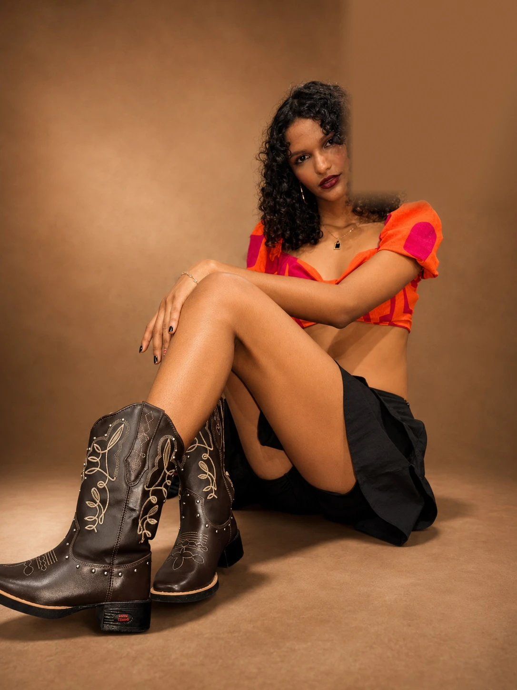

01 / 63
RAIANE
01 / 63
RAIANEBOOK 2026
MODELO DE PASSARELA · 1,82 M
EDITORIAL / BOOK 2026
RAIANE
Do interior para a passarela.
Presença que transforma silêncio em imagem.
RAIANE / 17 ANOS / ATM MODAS
Não é só uma foto.
É uma sensação.
Elegância com raiz. Disciplina, formação e uma presença cênica que equilibra delicadeza e força.
Um book construído como editorial: cada imagem ganha ritmo e atmosfera. Sem alterar rosto, corpo ou identidade.
02 / EM MOVIMENTO
PASSARELA



O corpo desenha a cena. A passarela acontece antes mesmo do primeiro passo.
ACERVO COMPLETO · 63 IMAGENS
TODAS AS FOTOS.
NENHUMA ESCONDIDA.
EDITORIAL EM MOVIMENTO — DA ORIGEM AO HORIZONTE.
ENTRE CENA E PROPÓSITO
Raiane
Modelo de passarela formada pela ATM Modas, estudante de escola militar e jovem talento vindo do interior. Aos 15 anos, alcançou 80 mil seguidores e quase 50 milhões de visualizações; escolheu priorizar os estudos antes de retomar sua trajetória artística com maturidade.
Gosta de dança, passarela, piscina e música. Carrega princípios moderados, valores familiares e o desejo de concluir sua formação sem abrir mão do sonho de modelar.